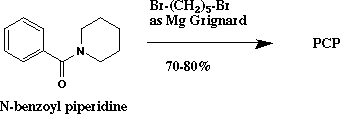

This is a promising underutilized method which takes place in one step (ref. 59-61,67). The starting material is N-benzoylpiperidine, which may be easily prepared in ~90% yield from benzoyl chloride and piperidine (ref. 68) or purchased commercially. Reaction of N-benzoylpiperidine with the lithium or magnesium organometallic derivative of 1,5-dibromopentane gives PCP. The only difficulty in this route is the preparation of the dibromopentane Grignard reagent, with its strict requirement for anhydrous conditions. This route has an overall yield of ~75% with a difficulty rating of 2 out of 10, and a hazard rating of 2 out of 10 (ref. 64).
Other analogs could also be prepared with this method by substituting another secondary amine (e.g. dimethylamine or diethylamine) for piperidine in the reaction with benzoyl chloride.

Procedure: A Grignard reagent is prepared from 56 g of magnesium turnings and 230 g of 1,5-dibromopentane in 2 liters of ether, and the mixture stirred and refluxed for 3 hrs. 151 g of N-benzoyl piperidine is added, and the ether is removed by distilling until the temperature in reaction vessel reaches about 83 C. The reaction mixture is then stirred at this temperature for sixteen hours, cooled and treated with sufficient ammonium hydroxide and a saturated solution of NH4Cl until the precipitate dissolves. The solution was diluted with 2 L of ether, and the ether layer removed by decantation. The ether layer is then washed, dried over sodium hydroxide, and the ether distilled off. The residue is distilled in vacuo to obtain PCP (bp 128-134 C/0.8 mm). (ref. 67)